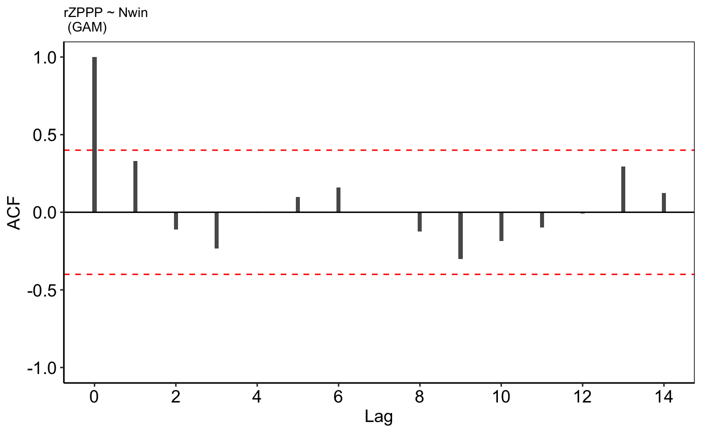
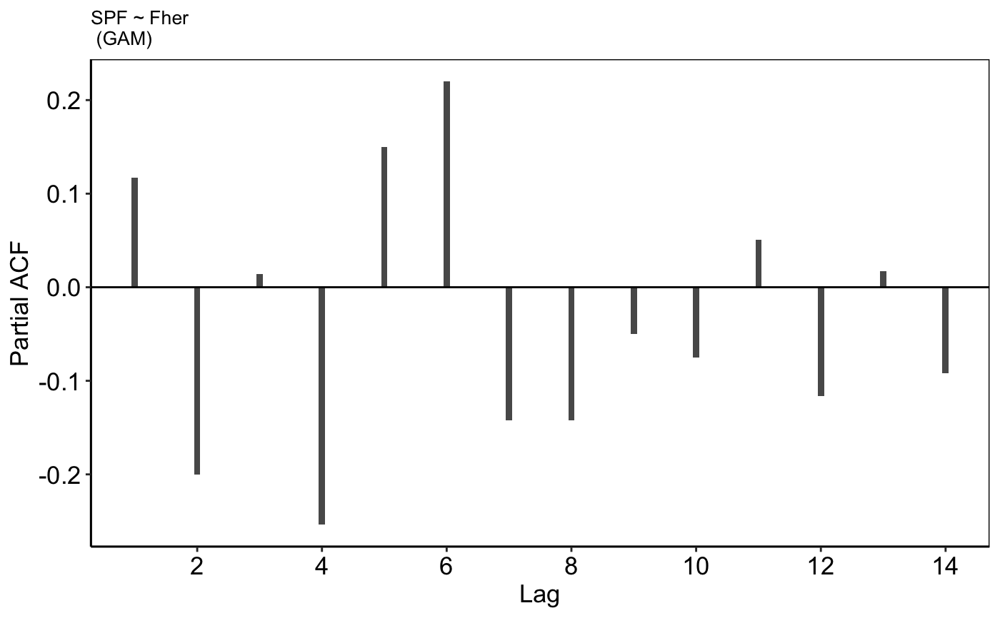
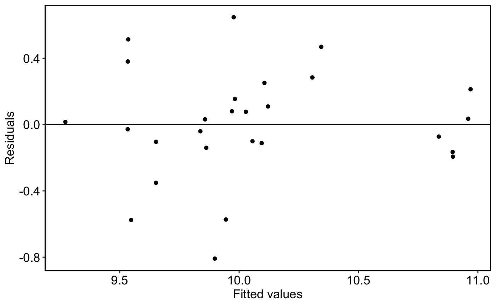
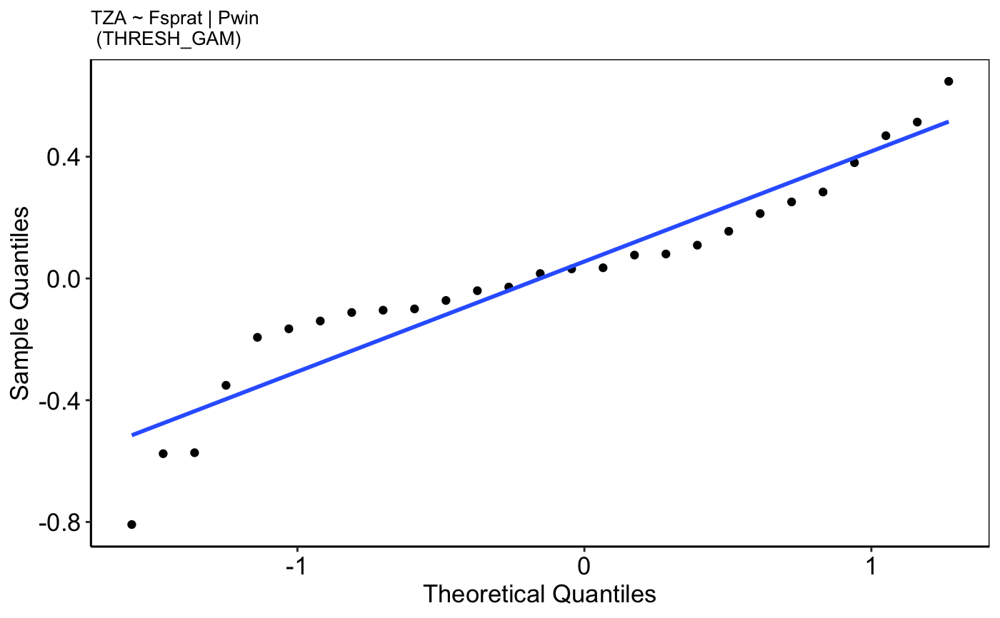
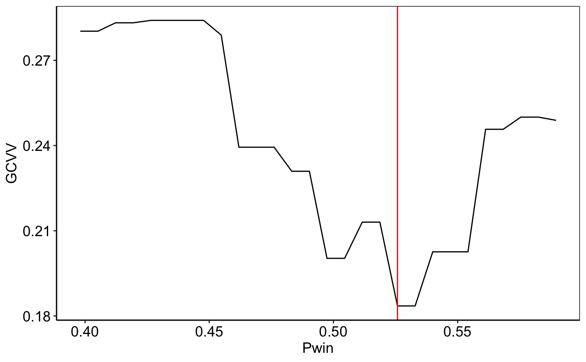
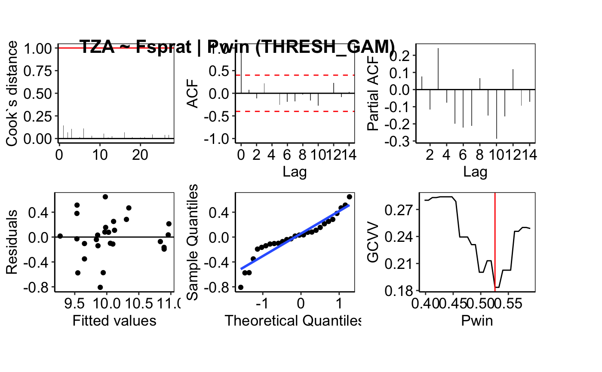

Diagnostic plots for a fitted GAM, GAMM or threshold-GAM(M)
Source:R/plot_diagnostics.R
plot_diagnostics.Rdplot_diagnostics takes a list of models of class `gam`, `gamm`
or `thresh_gam` or a mix of those and produces some diagnostic
information of the fitting procedure and results. The function returns a
tibble with 6 list-columns containing individual plots (ggplot2 objects)
and one list-column containing a plot that shows all diagnostic plots
together.
plot_diagnostics(model_list)
Arguments
| model_list | A list with models of class gam(m) and/or thresh_gam,
e.g. the list-column |
|---|
Value
The function returns a tibble, which is a trimmed down version
of the data.frame(), including the following elements:
indIndicator names.
pressPressure names.
cooks_distA list-column of ggplot2 objects that show the Cook`s distance of all observations, which is a leave-one-out deletion diagnostics to measure the influence of each observation. Data points with a large Cook`s distance (> 1) are considered to merit closer examination in the analysis.
acf_plotA list-column of ggplot2 objects that show the autocorrelation function for the residuals. NAs in the time series due to real missing values, test data extraction or exclusion of outliers are explicitly considered.
pacf_plotA list-column of ggplot2 objects that show the partial autocorrelation function for the residuals. NAs are explicitly considered.
resid_plotA list-column of ggplot2 objects that show residuals vs. fitted values.
qq_plotA list-column of ggplot2 objects that show the quantile-quantile plot for normality.
gcvv_plotA list-column of ggplot2 objects that show for a threshold-GAM the development of the generalized cross-validation value at different thresholds level of the modifying pressure variable. The GCV value of the final chosen threshold should be distinctly lower than for all other potential thresholds, i.e., the line should show a pointy negative peak at this threshold. If this is not the case, e.g. the trough is very wide with similar GCV values for nearby thresholds, the threshold-GAM is not optimal and should not be favored over a GAM despite the better LOOCV (leave-one-out cross-validation value).
all_plotsA list-column of ggplot2 objects that show all five (six if threshold-GAM) plots together. For this plot, drawing canvas from the
cowplotpackage were added on top of ggplot2.
Details
The function can deal with any model of the classes `gam`, `gamm` or `thresh_gam` as long as the input is a flat list. That means:
If only one model is provided as input coerce the model explicitly to class `list`. An input such as model_gam_ex[1, "model"] will not work as the class is a tibble. Use instead model_gam_ex$model[1].
If the input are one or more threshold-GAMs selected from the
test_interactionoutput (variablethresh_modelsthe model list features a nested structure: each IND~pressure pair (row) might have more than one threshold-GAM. To remove the nested structure use e.g. theflattenfunction (see examples).
See also
cooks.distance, acf,
pacf, qqnorm, and
flatten for removing a level hierarchy from a list
Other IND~pressure modeling functions: find_id,
ind_init, model_gamm,
model_gam, plot_model,
scoring, select_model,
test_interaction
Examples
# Using some models of the Baltic Sea demo data: # Apply function to a list of various model types model_list <- c(all_results_ex$thresh_models[[5]], model_gam_ex$model[39], all_results_ex$model[76]) plots <- plot_diagnostics(model_list) plots$cooks_dist[[1]]plots$acf_plot[[2]]plots$pacf_plot[[3]]plots$resid_plot[[1]]plots$qq_plot[[1]]plots$gcvv_plot[[1]] # for threshold modelsplots$all_plots[[1]] # shows all 5-6 plots# Make sure that thresh_models have not a nested list structure: model_list <- all_results_ex$thresh_models[5:6] %>% purrr::flatten(.) plots <- plot_diagnostics(model_list)